Действия с пином в одной панели
Сохранение, распределение по доскам, перенос и удаление теперь собраны в одном месте. Для мультиселекта я отдельно продумала поведение панели при выборе нескольких пинов.
Упростила сохранение, удаление и перенос пинов в коллекции
Вместо вдохновления и поиска идей, приходится отвлекаться,
искать нужные действия и разбираться, что произошло
Я пересобрала три сценария: сохранение, удаление и перенос пинов
Меньше разбираться в Pinterest, больше думать о своих идеях
Больше возвращений к доскам
и работы с сохранёнными идеями

#1 Сохранение пина
Иногда хочется просто листать ленту и сохранять то, что цепляет. Но каждый раз приходится выбирать доску или создавать новую
Теперь пин можно сохранить одним нажатием, даже не открывая его. Выбрать доску можно позже
#2 Удаление пина
Удаление спрятано внутри «Редактирования». Во время проверки три участника находили нужное действие только с 3–5 попытки
Удалить пин можно через ту же закладку, с помощью которой он был сохранён — без поиска нужного действия в меню.
#3 Перенос пинов через мультиселект
Вход в мультиселект спрятан за неочевидной иконкой, поэтому сам сценарий переноса нескольких пинов сложно обнаружить.
Теперь вход в мультиселект в привычном меню «Ещё». Панель управления я адаптировала для переноса нескольких пинов на одну доску.
Сохранение, распределение по доскам, перенос и удаление теперь собраны в одном месте. Для мультиселекта я отдельно продумала поведение панели при выборе нескольких пинов.
Ожидала бы рост сохранений из ленты.
Ожидала бы, что пользователи будут чаще переносить несколько пинов группой.
Ожидала бы снижение обходного сценария «удалить + пересохранить».
Ожидала бы, что пользователи будут быстрее находить удаление и тратить меньше времени на действие.
Ожидала бы больше возвратов к сохранённому контенту и работы с коллекцией.
Расширила задачу от локальных сценариев до общей модели управления пинами. Я увидела, что удаление и перенос нельзя рассматривать отдельно от сохранения. Поэтому пересобрала связи между сохранением, организацией и управлением пинами — общая коллекция стала базовым состоянием, а доски способом дальнейшей организации.
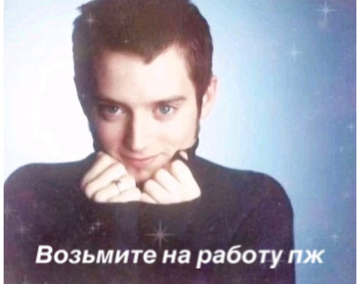
Как работала над проектом
Pinterest годами игнорирует базовую гигиену управления контентом:
Открытый ресёрч подтвердил — это массовые запросы с 2012 года
Пользователь должен вдохновляться и работать с идеями, а не заниматься «раскопками» нужных действий.
Сделать работу с сохранённым контентом проще, чтобы поддержать возвраты к доскам и коллекциям.
Активные кураторы с библиотекой 800–1000 пинов. Для них неудобное управление — не мелочь, а реальный барьер.
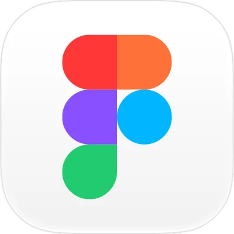
Открытый ресёрч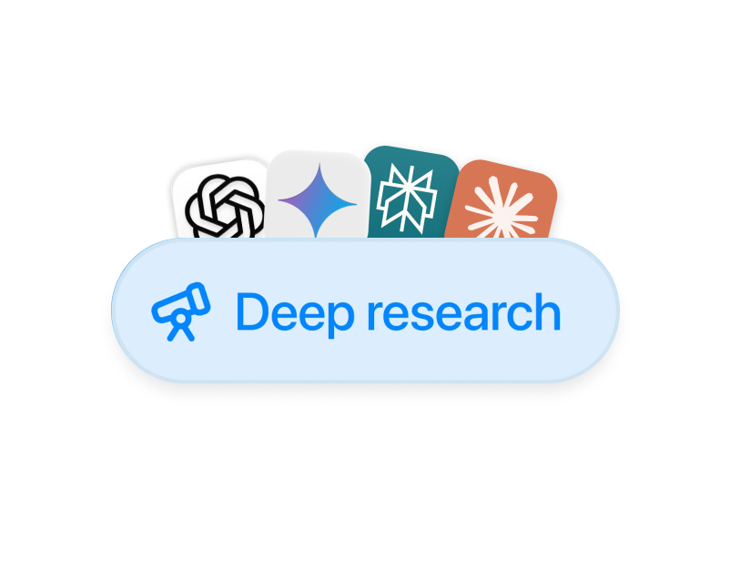
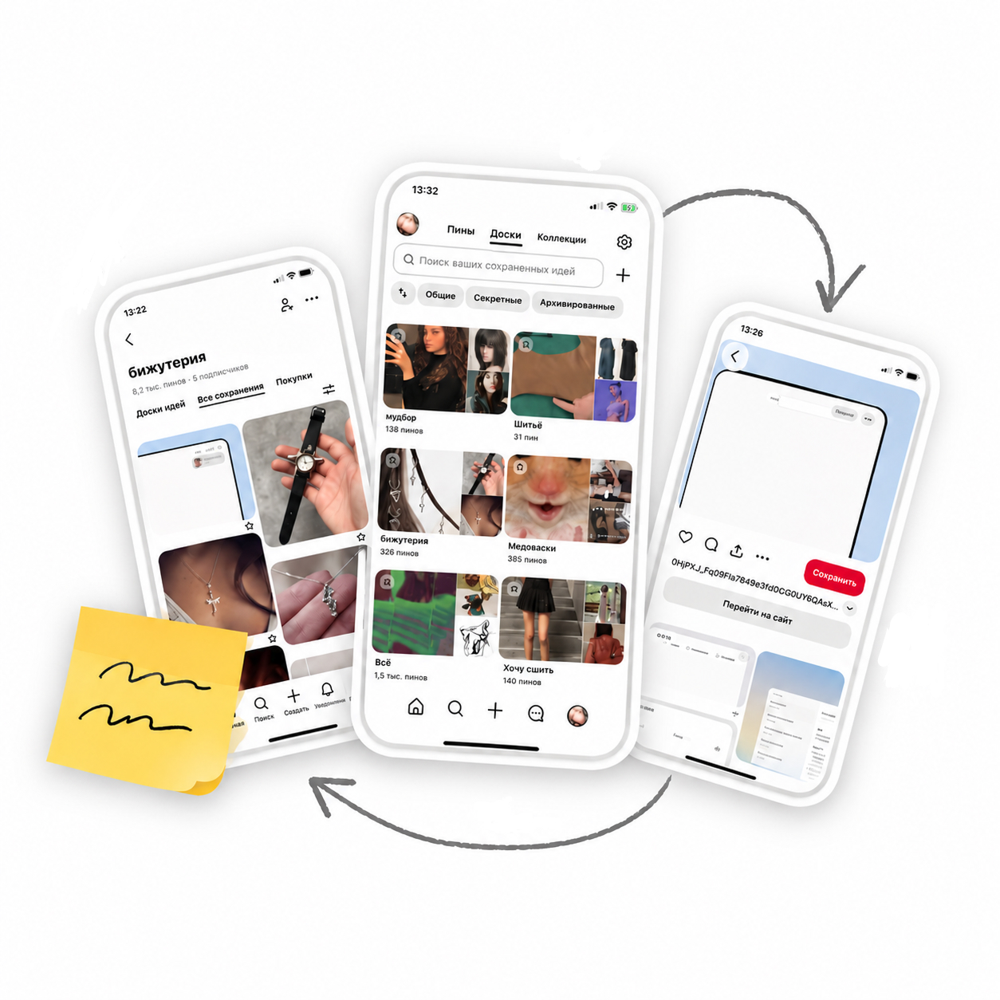
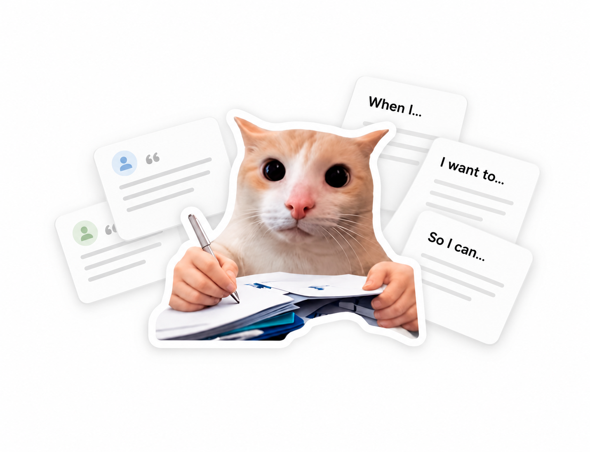
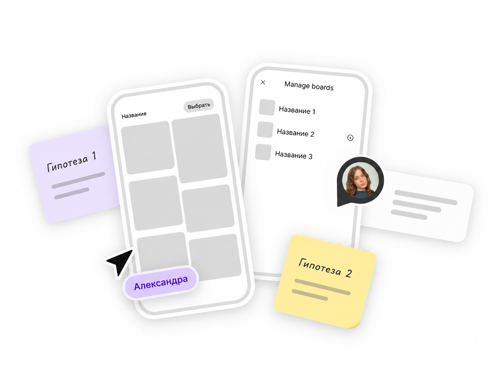
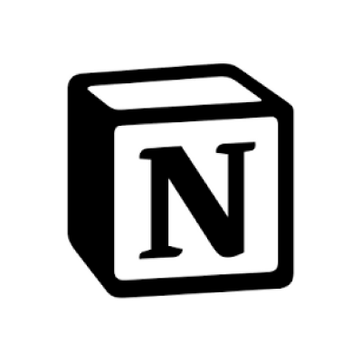
Интервью x3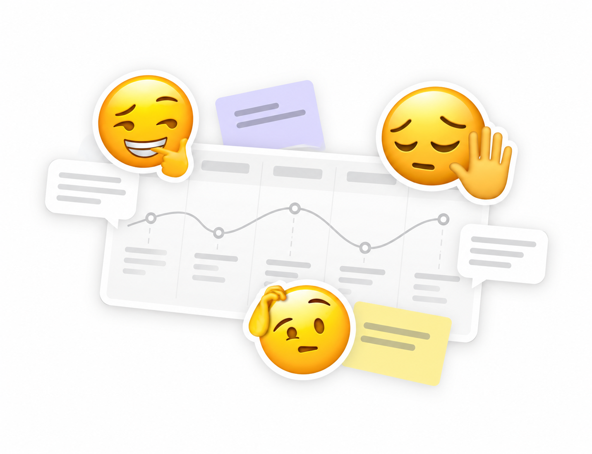
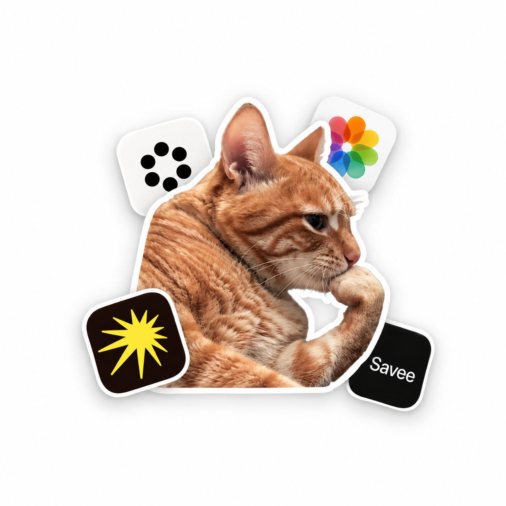
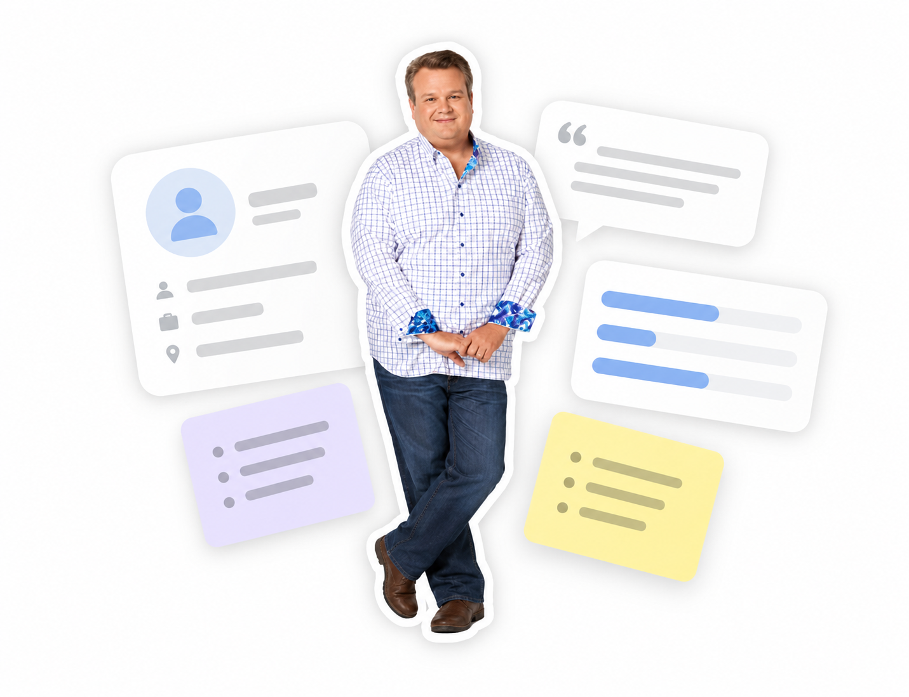
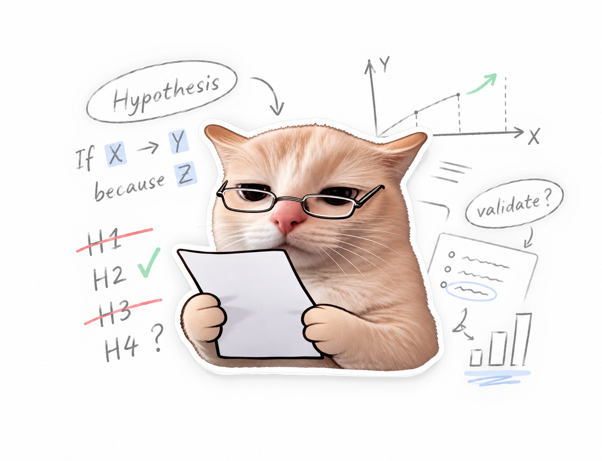
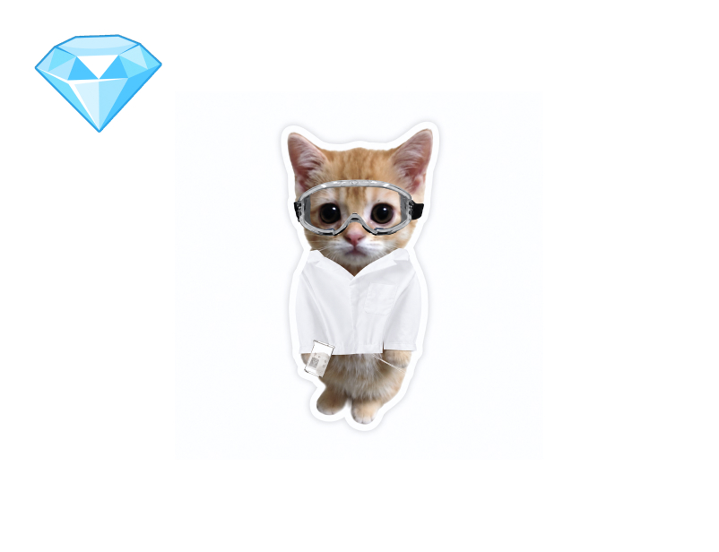
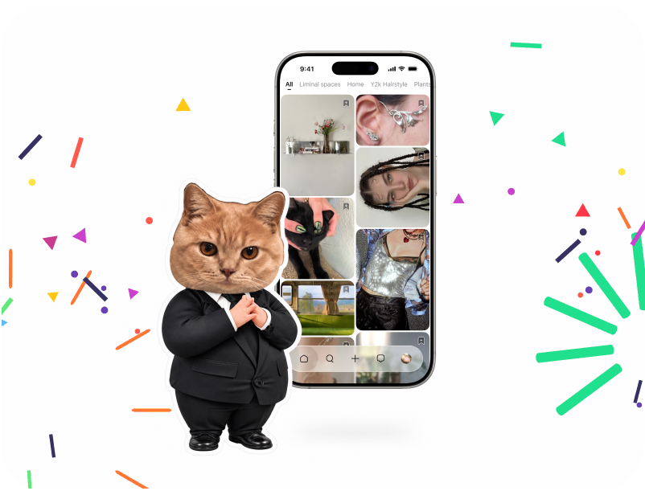
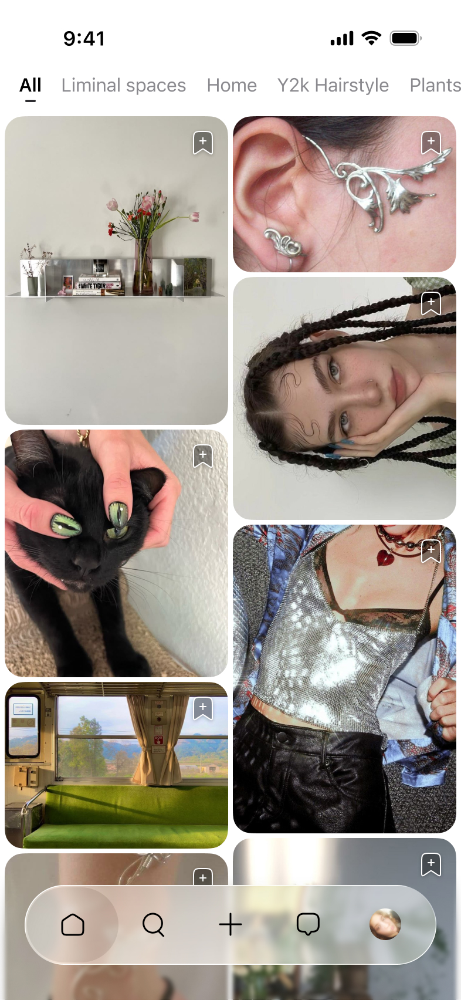
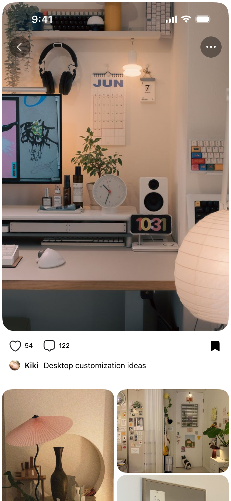
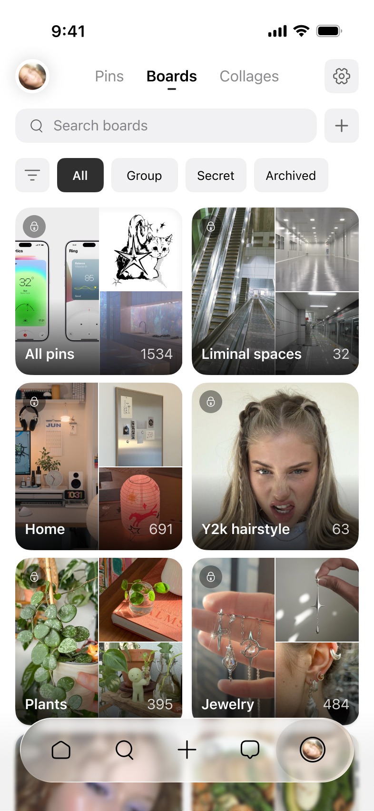
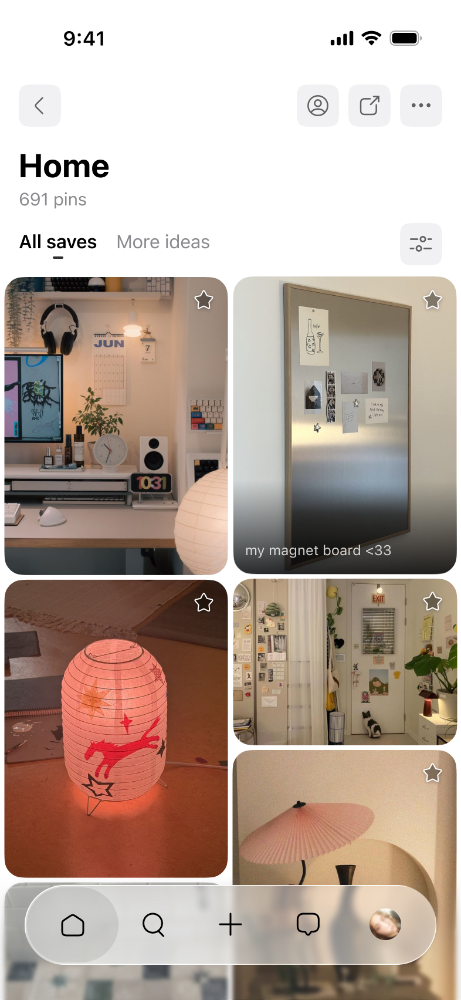
Спасибо, что досмотрели до конца